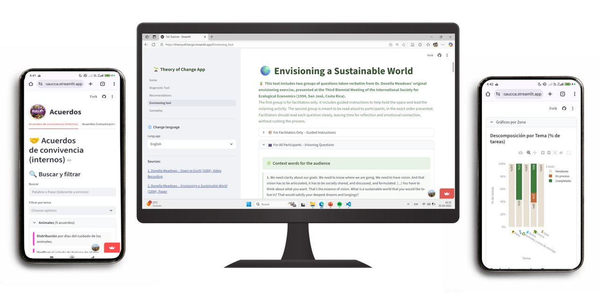

Nuestros servicios
Tres ejes de trabajo para organizaciones

Servicio 01
Diseño Regenerativo Organizacional
Diagnóstico multidimensional de tu organización, proyecto o territorio. Usamos nuestra plataforma de Indagación Regenerativa para evaluar 10 dimensiones del potencial de cambio y construir una Teoría del Cambio sólida.
- Diagnóstico en 10 dimensiones regenerativas
- Teoría del Cambio y mapa de impacto
- Plan Maestro con horizontes de tiempo
- Indicadores y umbrales de éxito

Servicio 02
Sistemas de Monitoreo, Evaluación y Aprendizaje (MEL)
Construimos la infraestructura digital para seguir el pulso de tu proyecto. Definimos indicadores, diseñamos los formularios de recolección de datos y desarrollamos dashboards que traducen evidencia en decisiones.
- Definición de indicadores y umbrales
- Plataformas de recolección de datos
- Dashboards de monitoreo en tiempo real
- Reportes de impacto automatizados

Servicio 03
Plataformas digitales personalizadas
Desarrollamos aplicaciones web a medida para gestionar los procesos específicos de tu organización: desde la gestión de eventos hasta el registro de acuerdos internos y el seguimiento de participantes.
- Aplicaciones web a medida (Streamlit, Python)
- Gestión de participantes y beneficiarios
- Registro y análisis de datos de campo
- Capacitación y transferencia tecnológica